Satu stylesheet cetak, satu pembina baris arahan: kulit navy penuh, kolofon, Kandungan bernombor halaman automatik, kepala dan kaki larian, nota kaki, jadual data, carta dan penutup — lengkap dengan salinan bertag PDF/UA-1 dan PDF/A-2b untuk arkib.
Data demonstrasi. Tunjuk semua blok: KPI, jadual data, carta, kotak keputusan, nota kaki dan penutup.
Buka PDF Versi PDF/UAPerbandingan enjin, ujian sebenar pada pelayan, kontras WCAG dan bentuk templat yang dicadangkan.
Buka PDF Versi PDF/UAReka bentuk cetak dalam satu fail CSS; kandungan ditulis HTML ringkas, tidak menyentuh kod.
zentra-report.css bina_laporan.py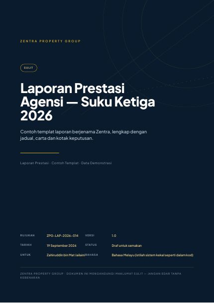
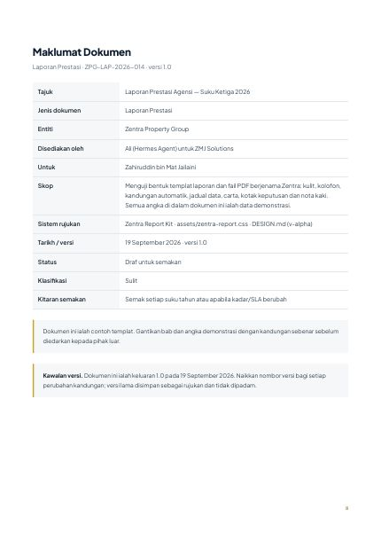
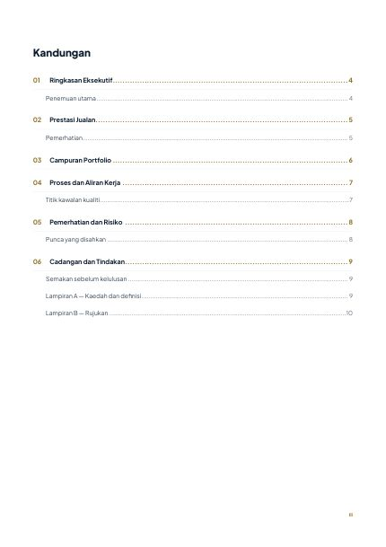
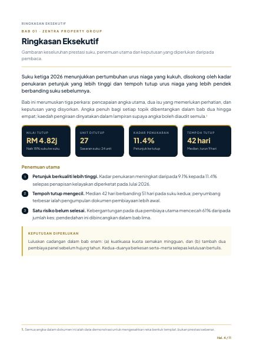
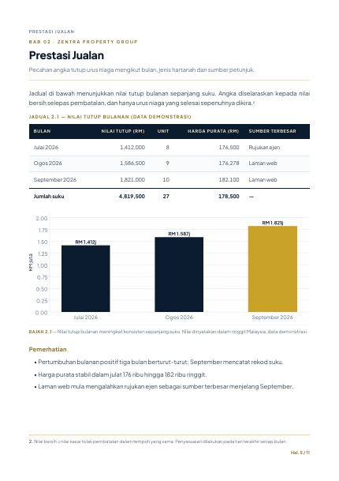
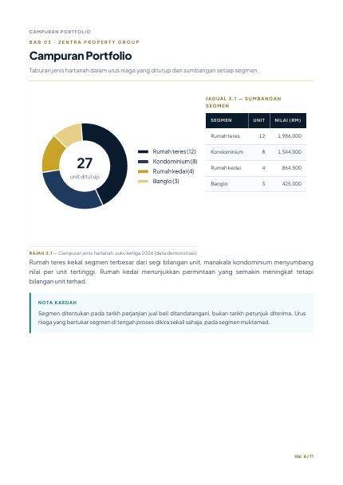
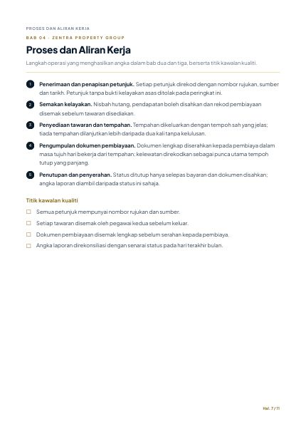
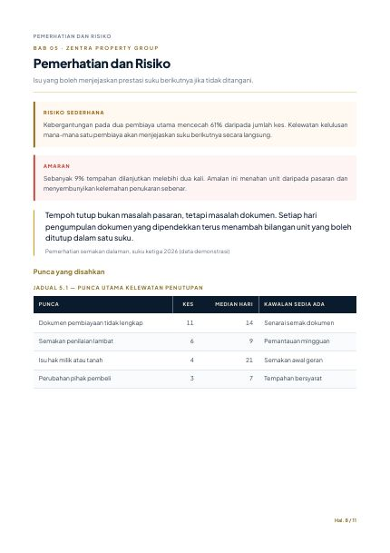
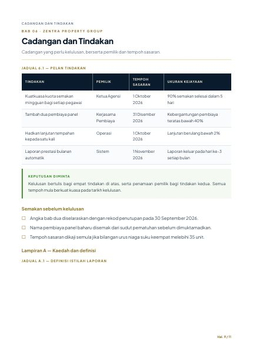
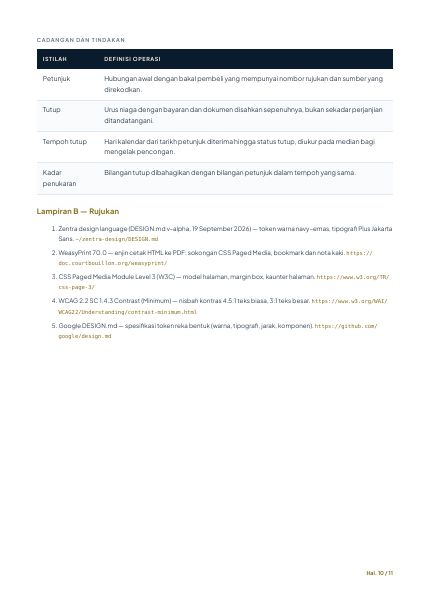
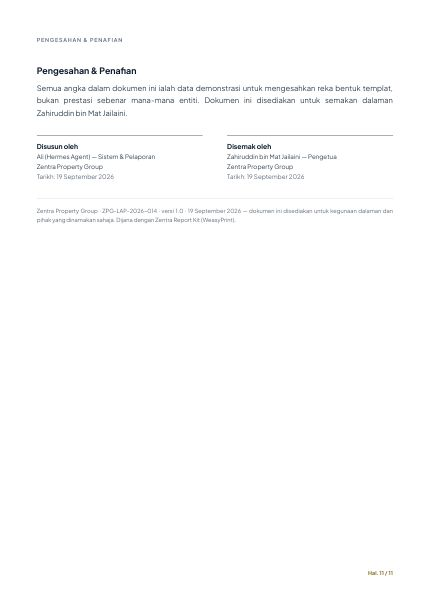
| Keupayaan | WeasyPrint 70 | Chrome 152 |
|---|---|---|
| Bookmark PDF | Ya | Tidak |
| Nombor halaman Kandungan | Ya | Tidak |
| Metadata dokumen | Ya | Sebahagian |
| PDF bertag (aksesibiliti) | Ya (pdf/ua-1) | Ya |
| PDF/A arkib | Ya (pdf/a-2b) | Tidak |
| Fon terbenam | CID TrueType | Type 3 |
#C9A227 atas putih hanya 2.42:1 — gagal WCAG AA. Teks emas kecil
pada latar cerah kini guna #8A6D20 (4.90:1). Emas teras kekal untuk latar navy,
garis halus dan elemen grafik.
python3 bina_laporan.py \ --meta meta.json \ --kandungan badan.html \ --keluar laporan.pdf \ --ua --pdfa --sahkan
zentra-report-kit/ ├── bina_laporan.py ├── md_ke_laporan.py ├── assets/zentra-report.css ├── assets/fonts/PlusJakartaSans-w*.ttf ├── templates/laporan.html.j2 └── contoh/
--sahkan ada isyarat: limpahan margin, teks bertindih, fon Type 3